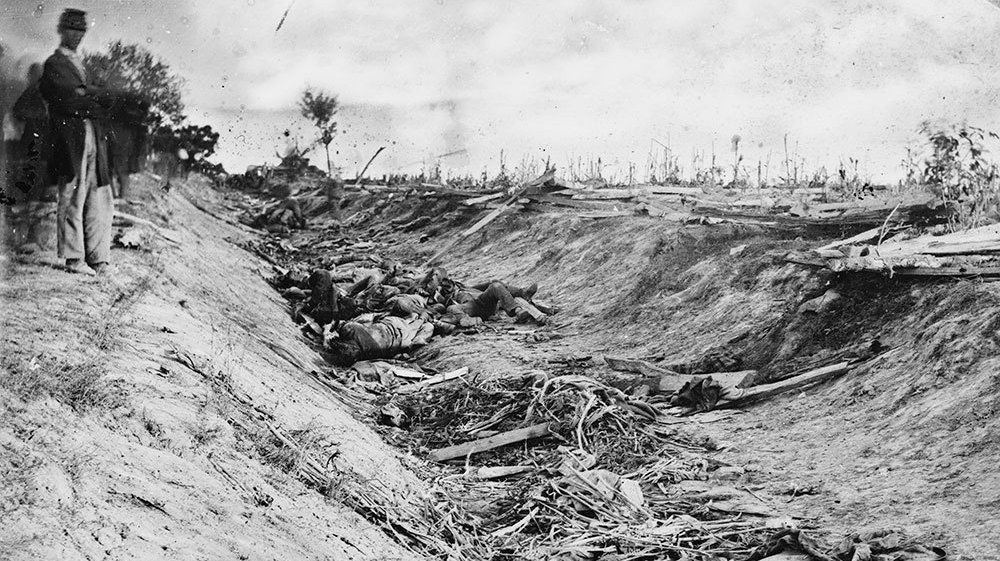

American Civil War

The American Civil War (1861-1865) was a pivotal conflict in United States history, fought between the Union (Northern states) and the Confederate States of America (Southern states) that seceded from the Union. The primary cause of the war was the issue of slavery, specifically its expansion into newly acquired western territories. Tensions over states' rights and the balance of power between federal and state governments also played a significant role. The conflict was characterized by brutal and large-scale battles, massive loss of life, and significant economic and social upheaval. By its conclusion, the Union had emerged victorious, leading to the abolition of slavery and the preservation of the United States as a single, unified country.
The Battle of Gettysburg, fought from July 1 to July 3, 1863, is one of the most famous and decisive battles of the American Civil War. Located in Pennsylvania, it marked a turning point in the war. Confederate General Robert E. Lee launched an invasion of the North, but his forces were met by Union troops under the command of General George Meade. Over three days, intense fighting ensued, with significant casualties on both sides. Lee's army was ultimately forced to retreat, ending his invasion of the North. The Union victory at Gettysburg, combined with the fall of Vicksburg in the Western theater, shifted the momentum of the war in favor of the Union. President Lincoln’s famous Gettysburg Address, delivered months later, immortalized the battle as a symbol of the nation’s struggle for unity and freedom.
The American Civil War was a pivotal moment in shaping the modern United States. It addressed fundamental issues like slavery, states' rights, and federal authority that had divided the nation since its founding. Learning about the Civil War helps us understand how these conflicts were resolved and how they continue to influence American politics, race relations, and the concept of national unity today. The war's outcome, including the abolition of slavery through the Thirteenth Amendment, redefined American identity and set the stage for future civil rights movements. Studying this period sheds light on how the nation overcame its deepest internal divisions and moved toward becoming a more just and unified society.
The American Civil War was a pivotal moment in shaping the modern United States. It addressed fundamental issues like slavery, states' rights, and federal authority that had divided the nation since its founding. Learning about the Civil War helps us understand how these conflicts were resolved and how they continue to influence American politics, race relations, and the concept of national unity today. The war's outcome, including the abolition of slavery through the Thirteenth Amendment, redefined American identity and set the stage for future civil rights movements. Studying this period sheds light on how the nation overcame its deepest internal divisions and moved toward becoming a more just and unified society.
One of the most significant reasons to study the American Civil War is to understand its role in ending slavery and laying the groundwork for future civil rights advancements. The war resulted in the Emancipation Proclamation and eventually led to the Reconstruction Amendments (the 13th, 14th, and 15th Amendments), which abolished slavery, granted citizenship to former slaves, and protected voting rights for Black Americans. However, the post-war period also saw the rise of Jim Crow laws and systemic racial discrimination. By learning about the Civil War and its aftermath, we gain critical insights into the ongoing struggle for racial equality and justice in the United States. This history remains deeply relevant in modern discussions of race, equity, and civil rights.
The Missouri Compromise was a significant legislative agreement aimed at resolving the escalating tensions over the expansion of slavery into newly acquired territories. In 1819, Missouri applied for statehood as a slave state, prompting a heated debate in Congress about the balance of power between slave and free states. The compromise, crafted by Henry Clay, allowed Missouri to enter the Union as a slave state while Maine was admitted as a free state, thus maintaining the delicate balance in the Senate. Additionally, it established a geographic boundary (the 36°30' parallel) north of which slavery would be prohibited in the Louisiana Purchase territory, except for Missouri. Although it temporarily eased tensions, the compromise highlighted the deep divisions over slavery and foreshadowed future conflicts as more states sought admission to the Union. More about Missouri Compromise
The Compromise of 1850 was another crucial attempt to address the sectional conflicts surrounding slavery, particularly following the Mexican-American War and the acquisition of vast territories. This series of legislative measures sought to appease both Northern and Southern interests. Key components included the admission of California as a free state, the establishment of territorial governments in New Mexico and Utah with the option of popular sovereignty (allowing residents to decide on slavery), the abolition of the slave trade in Washington, D.C., and the implementation of a stricter Fugitive Slave Law. While the compromise initially diffused tensions, the harsh realities of the Fugitive Slave Law, which mandated the return of escaped slaves to their owners, infuriated many in the North and solidified anti-slavery sentiment. This cycle of temporary solutions further entrenched the ideological divide between the North and South. More about Compromise of 1850
The Kansas-Nebraska Act represented a pivotal turning point in the prelude to the Civil War, as it effectively repealed the Missouri Compromise and allowed for the possibility of slavery in territories where it had previously been prohibited. Proposed by Senator Stephen A. Douglas, the act created two new territories—Kansas and Nebraska—and introduced the concept of popular sovereignty. This provision allowed settlers in these territories to determine whether they would allow slavery, igniting fierce competition between pro-slavery and anti-slavery settlers. The resulting conflict, known as "Bleeding Kansas," was marked by violent clashes between opposing factions, including the infamous attack led by abolitionist John Brown. The chaos in Kansas highlighted the failure of legislative compromises to resolve the deep-seated issues surrounding slavery and demonstrated that violence was becoming an accepted means of political expression. More about The Kansas-Nebraska Act
The Dred Scott v. Sandford Supreme Court case was a landmark decision that had far-reaching implications for the status of slavery in the United States. Dred Scott was an enslaved African American man who sued for his freedom after living in free territories with his owner. In a deeply controversial ruling, the Supreme Court, led by Chief Justice Roger B. Taney, declared that Scott had no legal standing to sue because he was not considered a citizen. Furthermore, the Court ruled that the federal government had no authority to prohibit slavery in the territories, effectively nullifying the Missouri Compromise. This decision enraged abolitionists and further polarized the nation, as it confirmed Southern fears of a Northern conspiracy to abolish slavery and Northern fears of the expansion of slavery into new territories. The ruling galvanized anti-slavery activism and was a major catalyst for the formation of the Republican Party. More about Dred Scott Decision
John Brown's raid on Harpers Ferry was a significant and dramatic event that escalated tensions between the North and South. Brown, a fervent abolitionist, aimed to incite a slave rebellion by seizing a federal arsenal in Harpers Ferry, Virginia, in October 1859. He believed that arming enslaved individuals would lead to an uprising against their oppressors. However, the raid quickly failed as federal troops, led by Colonel Robert E. Lee, surrounded Brown and his followers. Brown was captured, tried for treason, and executed. His actions, while unsuccessful, made him a martyr in the eyes of many abolitionists and heightened Southern fears of Northern aggression. The raid symbolized the lengths to which some were willing to go to end slavery and underscored the irreconcilable differences between the two regions. The incident intensified the national debate over slavery and contributed to the growing belief that civil war was imminent. More about John Brown's Raid
The election of Abraham Lincoln in November 1860 was the final event that triggered the Southern states' secession from the Union. Lincoln, a member of the newly formed Republican Party, ran on a platform that opposed the expansion of slavery into the territories. His election was viewed by Southern leaders as a direct threat to their way of life and the institution of slavery. Following Lincoln's victory, Southern states, beginning with South Carolina in December 1860, began to secede from the Union, forming the Confederate States of America in February 1861. The secession was driven by the belief that Lincoln would implement policies that would undermine the Southern economy and societal structure. This series of events, along with Lincoln's subsequent call for federal troops to suppress the rebellion, set the stage for the Civil War, marking a definitive end to any hopes for peaceful resolution to the sectional conflict. More about 1860 Election
The Battle of Fort Sumter, fought on April 12-13, 1861, is recognized as the first battle of the American Civil War. Located in Charleston Harbor, South Carolina, Fort Sumter was held by Union forces under Major Robert Anderson. The conflict began when Confederate troops, having already seceded from the Union, demanded that Anderson surrender the fort. When negotiations failed, the Confederates opened fire, bombarding the fort for 34 hours. Anderson and his men eventually surrendered, marking a significant victory for the Confederacy and a rallying point for Southern forces. The battle galvanized the North, prompting President Lincoln to call for 75,000 volunteers to suppress the rebellion, which led to a wave of enlistments and fervor in the Union states. The fall of Fort Sumter also solidified the divide between North and South, as many states in the Upper South seceded in response to the conflict, setting the stage for a prolonged and bloody civil war. More about Battle of Fort Sumter
Cr.: Britannica
The Battle of Antietam, fought on September 17, 1862, near Sharpsburg, Maryland, is recognized as the bloodiest single day in American military history, with around 22,000 casualties. This pivotal battle was part of Lee's first invasion of the North, as he sought to take the fight to Union soil and gain support from border states and foreign nations. Union General George McClellan confronted Lee’s Army of Northern Virginia, leading to a series of brutal clashes at various locations along Antietam Creek. The Union forces managed to halt Lee’s advance, forcing him to retreat back to Virginia. Although technically a draw, the Union's strategic advantage and the heavy Confederate losses allowed President Lincoln to issue the Emancipation Proclamation just days later, transforming the war’s purpose from solely preserving the Union to a moral crusade against slavery. The battle also had significant political ramifications, as it prevented European powers from recognizing the Confederacy and further solidified the resolve of the Union. More about Antietam
Cr.: NPR
The Battle of Chancellorsville, fought from April 30 to May 6, 1863, is often cited as General Robert E. Lee's greatest victory during the Civil War, despite the heavy losses incurred by the Confederacy. Facing Union General Joseph Hooker, who had a numerical advantage, Lee executed a bold and risky strategy by dividing his forces and launching a surprise attack on the Union flanks. Lee's audacity paid off when his forces, aided by the daring maneuver of General Stonewall Jackson, achieved a decisive victory, forcing Hooker to retreat. However, the victory came at a steep cost; Stonewall Jackson was accidentally shot by his own men during the battle and later died from his wounds. This loss left a significant void in Lee's command structure. While the battle showcased Lee's tactical brilliance, it also foreshadowed the challenges he would face in the subsequent Gettysburg campaign. Chancellorsville reinforced the confidence of the Confederate army but also revealed the limits of their resources and the personal costs of such daring tactics. More about Battle of Chancellorsville
Cr.: history.com
The Siege of Vicksburg, which lasted from May 18 to July 4, 1863, was a critical turning point in the American Civil War, giving the Union control of the Mississippi River and effectively splitting the Confederacy in two. The city of Vicksburg, Mississippi, was strategically important as it served as a Confederate stronghold and a vital supply line. Union General Ulysses S. Grant laid siege to the city, employing a combination of military strategy and relentless bombardment to starve the Confederates into submission. The siege lasted nearly seven weeks, during which the citizens of Vicksburg suffered greatly from food shortages and constant artillery fire. On July 4, the Confederate commander, General John C. Pemberton, surrendered, giving the Union a crucial victory and boosting Northern morale. The capture of Vicksburg also elevated Grant to national prominence, eventually leading to his appointment as General-in-Chief of all Union armies. This victory, alongside the Union triumph at Gettysburg just a day earlier, marked a significant shift in the war's momentum. More about Battle of Vicksburg
Cr.: history.com
The Battle of Gettysburg is often regarded as the turning point of the American Civil War, marking a significant shift in momentum towards the Union forces. Fought from July 1 to July 3, 1863, in and around the town of Gettysburg, Pennsylvania, the battle involved the largest number of casualties in the entire war, with over 51,000 soldiers killed, wounded, or missing. Confederate General Robert E. Lee aimed to invade the North and achieve a decisive victory that could sway public opinion in favor of the Confederacy and possibly encourage European intervention. However, Union General George G. Meade and his forces mounted a fierce defense. The climax of the battle came on July 3 with Pickett's Charge, a bold but disastrous assault by Confederate troops against the center of the Union line. The failure of this charge marked the end of Lee's invasion of the North. The Union victory at Gettysburg not only halted Confederate momentum but also bolstered Northern morale, leading to President Abraham Lincoln's famous Gettysburg Address, which redefined the war as a struggle for a new birth of freedom and a commitment to the principles of democracy. More about Battle of Gettysburg
history.com
The Battle of Appomattox Court House, fought on April 9, 1865, marked the final significant engagement of the American Civil War. General Robert E. Lee, faced with dwindling supplies and an overwhelming Union force under General Ulysses S. Grant, made the fateful decision to surrender his Army of Northern Virginia at Appomattox Court House in Virginia. The surrender was preceded by a series of skirmishes as Lee attempted to evade Union forces and join other Confederate troops. Ultimately, realizing that further resistance was futile and that his men were exhausted, Lee met Grant in the parlor of Wilmer McLean's home, where the terms of surrender were negotiated. Grant's generous terms allowed Confederate soldiers to return home with their horses, a gesture aimed at fostering reconciliation. The surrender at Appomattox effectively marked the end of the Civil War, as it led to the collapse of Confederate resistance in other regions. This moment is often viewed as a poignant conclusion to the conflict, symbolizing both the end of a bloody chapter in American history and the beginning of the challenging process of Reconstruction and healing the nation. More about Battle of Appomattox Court House

Cr.: Wikipedia
The end of the American Civil War in April 1865 marked a profound transformation in the United States, resulting in significant social, political, and economic changes. The surrender of General Robert E. Lee's Army of Northern Virginia at Appomattox Court House on April 9, 1865, effectively signaled the collapse of the Confederacy and the cessation of hostilities. The Union victory brought an end to a brutal conflict that had claimed over 600,000 lives and left vast regions of the South devastated. As Union General Ulysses S. Grant and Confederate General Lee shook hands in a historic moment of reconciliation, the nation was left to grapple with the complexities of reconstruction and the challenges of reintegrating the Southern states into the Union. The immediate aftermath of the war set the stage for a turbulent period marked by significant changes in American society, politics, and economics.
One of the most significant consequences of the Civil War was the passage of the Thirteenth Amendment, which abolished slavery in the United States. Ratified in December 1865, this monumental change aimed to fulfill the Union's commitment to freedom and equality. The abolition of slavery not only liberated millions of African Americans but also transformed the social and economic landscape of the South. The former enslaved population sought to redefine their identities and roles in society, resulting in a shift toward sharecropping and labor agreements, although many faced systemic racism, economic hardship, and legal restrictions that undermined their newfound freedoms. The struggle for civil rights and social equality continued long after the war, as African Americans fought against discriminatory practices and for access to education, land, and political representation. This ongoing battle for equality and justice laid the foundation for future civil rights movements in the United States.
The political landscape of the United States also underwent significant changes in the aftermath of the Civil War. The Reconstruction Era, which lasted from 1865 to 1877, aimed to reintegrate the Southern states and ensure civil rights for newly freed African Americans. Congress implemented a series of Reconstruction Acts, which included military oversight of Southern states, the establishment of new state governments, and the protection of African American voting rights. However, this period was met with fierce resistance from many white Southerners, leading to the rise of organizations such as the Ku Klux Klan and the implementation of Black Codes aimed at restricting the rights of African Americans. The struggle over how to rebuild the South and integrate formerly enslaved individuals into society created deep divisions within American politics, resulting in fierce debates over civil rights and the role of the federal government in enforcing those rights.
Economically, the end of the Civil War precipitated a significant transformation in the Southern economy, which had relied heavily on slavery. The war devastated the South's infrastructure, with cities and farmlands in ruins, and left many former enslaved individuals without resources or education. Sharecropping emerged as a predominant labor system, wherein freedmen and poor white farmers would rent land from landowners in exchange for a portion of their crop yield. While this system offered some independence, it often resulted in a cycle of debt and poverty, effectively perpetuating a form of economic exploitation that mirrored the conditions of slavery. In contrast, the Northern economy continued to grow, fueled by industrialization and advancements in transportation and technology. This economic disparity between the North and South contributed to ongoing tensions and debates about economic policy, taxation, and labor rights, which would continue to shape American society in the years to come.
The end of the Civil War also prompted significant shifts in American culture and social dynamics. With the abolition of slavery, African Americans began to assert their cultural identities, establishing schools, churches, and civic organizations that served as foundations for their communities. The Freedmen's Bureau was established to assist former slaves in their transition to freedom, providing education, healthcare, and legal support. This agency played a crucial role in promoting education and literacy among African Americans, laying the groundwork for future generations to pursue civil rights and social justice. At the same time, the legacy of the Civil War and the struggle for civil rights would lead to significant cultural shifts, influencing literature, art, and music. The post-war period saw the emergence of African American voices in literature and the arts, contributing to a rich cultural tapestry that would shape American identity in the years to come.
During the American Civil War, social hierarchy was sharply defined and varied significantly between the Northern and Southern states. In the North, society was becoming increasingly influenced by industrialization, which fostered a burgeoning middle class. This emerging middle class comprised merchants, industrialists, and professionals, who gained social and economic status through their participation in the expanding economy. However, the upper class still wielded considerable power and influence, often deriving their wealth from established businesses or old family fortunes. Conversely, in the South, the social hierarchy was rigidly based on land ownership and the institution of slavery. Wealthy plantation owners held the highest social status, often commanding significant political influence and societal respect. They relied heavily on enslaved labor to maintain their agricultural wealth, which reinforced their elite status. Below them were the yeoman farmers, who owned small plots of land and were often deeply invested in the institution of slavery despite not owning large numbers of slaves themselves. At the bottom of this hierarchy were enslaved individuals, who had no rights or social standing and were considered property. This stark social division played a crucial role in shaping the conflicts and ideologies that characterized the Civil War, as both sides grappled with issues of class, race, and power.
The Civil War profoundly altered family dynamics and gender roles, particularly as men left their homes to join the military. In the North, women stepped into roles traditionally held by men, taking on jobs in factories, farms, and other sectors essential to the war effort. Organizations such as the United States Sanitary Commission mobilized women to serve as nurses, providing care for wounded soldiers and managing hospitals. This new involvement of women in the public sphere marked a significant shift from the traditional roles of homemakers and caregivers, laying the groundwork for the future women's rights movement. Women began to advocate for their rights, recognizing their capabilities beyond domestic responsibilities. In the South, however, traditional gender roles were more pronounced due to the agrarian society's reliance on enslaved labor. With many men fighting in the war, Southern women found themselves managing plantations and households, often facing food shortages and economic instability. The war forced these women to navigate a complex social landscape, balancing the demands of home management with the broader realities of conflict and loss. As a result, the war redefined gender expectations, leading to lasting changes in the perception of women's roles in society.
The economic life during the American Civil War was marked by stark contrasts between the North and the South, fundamentally influencing the war's progression and outcomes. The Northern economy was predominantly industrial, characterized by manufacturing, trade, and the production of goods such as textiles, weapons, and food. This industrial base allowed the North to supply its armies effectively, maintain economic stability, and utilize railroads for efficient transportation of troops and supplies. The Union's economic advantages played a critical role in its ability to sustain the war effort over time. In contrast, the Southern economy was largely agrarian, relying heavily on the cultivation of cash crops such as cotton, tobacco, and rice. This reliance on agriculture was deeply intertwined with the institution of slavery, as enslaved individuals provided the labor necessary for large-scale plantation production. However, the war devastated the Southern economy, disrupting trade routes and leading to significant shortages of food and supplies. As the conflict dragged on, inflation skyrocketed, and the Confederate government struggled to maintain economic stability. The economic disparities between the North and South ultimately contributed to the Union's victory, as the North's industrial strength proved decisive in sustaining its military campaigns.
Slavery was at the heart of the American Civil War, serving as both a cause of the conflict and a critical factor in shaping the experiences of individuals on both sides. In the Southern states, slavery was an entrenched institution that provided the economic foundation for the agrarian society. Enslaved individuals were viewed as property, forced to work under brutal conditions on plantations. The dehumanization of enslaved people was a crucial element of Southern identity and economy, and the preservation of slavery became a rallying cry for many Confederate leaders. As the war progressed, enslaved individuals increasingly sought opportunities for freedom. Some escaped to Union lines, where they were often welcomed as "contraband" and offered the chance to support the Union war effort. This not only provided a significant boost to Union forces but also challenged the very institution of slavery itself. The Emancipation Proclamation, issued by President Abraham Lincoln in 1863, marked a pivotal moment in the war, declaring that all enslaved individuals in Confederate-held territory were to be set free. This shift not only changed the dynamics of the conflict but also began the long process of dismantling the institution of slavery in the United States. The impact of the Civil War on slavery would resonate long after the conflict ended, leading to the eventual abolition of slavery through the Thirteenth Amendment in 1865 and laying the groundwork for ongoing struggles for civil rights in the years to come.
Religion played a significant and complex role during the American Civil War, influencing the motivations of individuals and communities on both the Union and Confederate sides. As the nation descended into conflict, many Americans turned to their faith for guidance, solace, and justification. For the North, the war was often framed in terms of a moral crusade against slavery. Many abolitionists and religious leaders, particularly within Protestant denominations, viewed the fight against the Confederacy as not only a battle for the Union but also a divine mission to eradicate the sin of slavery. Prominent religious figures, such as the abolitionist preacher Henry Ward Beecher, used their pulpits to rally support for the Union cause, portraying the conflict as a moral struggle between good and evil. Churches became centers for recruitment and support for the war effort, with congregations holding prayer meetings and fundraising events to aid soldiers and their families.
In the South, religion was similarly intertwined with the war, but the focus was often on the preservation of the Southern way of life, including the institution of slavery. Many Southern Christians believed that their cause was sanctioned by God, interpreting the Bible to justify slavery and their fight for independence. Prominent clergy, such as Bishop Stephen Elliott of Georgia, preached sermons that framed the war as a test of faith, urging their congregations to trust in divine providence. The Confederacy even adopted religious imagery and language in its symbols, with the Confederate battle flag often seen as a representation of a righteous struggle. Throughout the war, churches in the South provided critical support for soldiers, offering prayers, care packages, and spiritual guidance to troops facing the harsh realities of battle.
The Civil War also prompted significant theological reflection and change among various denominations. The trauma and loss experienced during the conflict led many individuals to question their beliefs, while others found a renewed sense of purpose in their faith. The war's brutal realities forced both Northern and Southern Christians to grapple with profound theological questions about suffering, justice, and the nature of God. The conflict also highlighted existing divisions within denominations, with some congregations splitting along regional lines over their differing views on slavery and the war itself. By the war's end, the profound impact of religion was evident not only in the immediate aftermath of the conflict but also in the Reconstruction era, as faith communities worked to address the social and moral challenges facing the nation.
One of the most essential lessons from the American Civil War is the critical importance of national unity and identity. The conflict emerged from deep-seated divisions between the Northern and Southern states, primarily over issues such as slavery, economic disparities, and states' rights. The war underscored that a strong sense of national identity is vital for the stability and integrity of a nation. The Union's victory highlighted the need for a cohesive national purpose, demonstrating that disparate factions must find common ground to function effectively as a united entity. The war led to a reevaluation of American identity, prompting citizens to consider what it meant to be part of the United States. This lesson remains relevant today, as contemporary society grapples with political polarization and cultural divisions. The Civil War serves as a reminder that fostering dialogue, understanding, and a collective vision can prevent conflict and promote harmony in a diverse society.
The Civil War brought forth profound ethical questions surrounding the institution of slavery and the moral justification for war. As the conflict intensified, debates emerged about the moral implications of fighting to preserve or abolish slavery. The Union's aim to end slavery highlighted the ethical obligation to promote human rights and social justice, establishing a precedent for future movements advocating for equality and civil rights. The Emancipation Proclamation, issued by President Abraham Lincoln in 1863, not only transformed the war's purpose but also emphasized that justice and morality must guide national actions, especially in times of conflict. This lesson underscores the necessity for societies to critically examine their values and beliefs and to address injustices. The ongoing struggles for social justice, equality, and human rights worldwide reflect the enduring significance of the ethical considerations highlighted by the Civil War.
The American Civil War illustrated the vital role of effective leadership during times of crisis. Both military and political leaders faced immense challenges that required strategic decision-making, empathy, and resilience. Leaders such as Abraham Lincoln emerged as pivotal figures, displaying the ability to unite a fractured nation while navigating complex political landscapes. Lincoln's leadership during the war emphasized the importance of vision and moral clarity in guiding a nation through turmoil. Conversely, the war also demonstrated the consequences of poor leadership, particularly among Confederate leaders who struggled to maintain cohesion and effective strategy. The lessons learned from the Civil War highlight the need for capable leadership in addressing societal challenges, whether in government, military, or community organizations. The qualities of integrity, adaptability, and commitment to a greater good remain essential for leaders facing modern crises, from political strife to social unrest.
The American Civil War profoundly transformed American society and culture, with far-reaching effects that are still felt today. The war catalyzed significant changes in social structures, gender roles, and economic practices. Women took on new responsibilities during the war, serving as nurses, factory workers, and advocates for social change, thereby challenging traditional gender norms. The war also accelerated the movement towards industrialization in the North, altering economic dynamics and leading to urbanization. The cultural memory of the Civil War continues to shape American identity, influencing literature, art, and collective memory. The lessons drawn from this transformation illustrate the capacity of conflict to drive social change and the importance of acknowledging and understanding these shifts. As societies confront contemporary issues such as gender equality, labor rights, and cultural representation, the legacy of the Civil War serves as a reminder of the potential for growth and evolution in the aftermath of conflict.
The Civil War fundamentally altered the concepts of freedom and citizenship in the United States, highlighting the complexity of these ideals. The conflict was not solely about preserving the Union; it was also a struggle for the liberation of enslaved people and the redefinition of what it meant to be a citizen in a nation founded on the principles of liberty and equality. The 13th, 14th, and 15th Amendments, which abolished slavery and granted citizenship and voting rights to former enslaved individuals, represented significant strides toward realizing the promise of freedom for all Americans. However, the post-war era revealed that the journey toward true equality and integration was fraught with challenges, as systemic racism and discrimination persisted. This lesson emphasizes that the quest for freedom and full citizenship is ongoing and requires constant vigilance and effort to ensure that the ideals of justice and equality are upheld. The American Civil War serves as a poignant reminder that the struggle for freedom is complex and multifaceted, necessitating a commitment to addressing inequalities and promoting inclusivity in society.
The American Civil War, which lasted from 1861 to 1865, was primarily rooted in deep-seated issues surrounding slavery, states' rights, and economic differences between the North and South. Tensions escalated as Southern states sought to maintain and expand the institution of slavery, while the Northern states increasingly advocated for abolition and the containment of slavery. Key events leading up to the war, such as the Missouri Compromise, the Kansas-Nebraska Act, and the Dred Scott decision, highlighted the contentious debates over the status of slavery in new territories and states, ultimately fracturing the nation along regional lines.
The Civil War saw several significant battles that became turning points in the conflict. Notable battles include the First Battle of Bull Run, Antietam, Gettysburg, and Sherman's March to the Sea. The Battle of Gettysburg, fought from July 1 to July 3, 1863, is particularly significant as it marked a turning point in favor of the Union. The defeat of Confederate General Robert E. Lee's Army of Northern Virginia weakened the Confederate cause and bolstered Northern morale. The Union's strategic victories in key battles contributed to their eventual success in preserving the Union and ending slavery.
One of the most consequential acts during the Civil War was President Abraham Lincoln's Emancipation Proclamation, issued on January 1, 1863. This executive order declared that all enslaved people in the Confederate states were to be set free. Although the proclamation did not immediately free a single slave, it fundamentally changed the character of the war by making the abolition of slavery a central goal of the Union war effort. It also allowed for the recruitment of Black soldiers into the Union Army, further strengthening the Northern forces. The Emancipation Proclamation laid the groundwork for the eventual passage of the 13th Amendment, which abolished slavery in the United States.
African Americans played a crucial role in the Civil War, both as soldiers and as supporters of the Union cause. Approximately 180,000 Black men served in the Union Army, and they were instrumental in several key battles. Their participation challenged prevailing notions of race and citizenship and contributed to the fight for civil rights. Additionally, enslaved people who escaped to Union lines provided valuable intelligence and labor, further undermining the Confederate war effort. The Civil War marked a pivotal moment in the African American struggle for freedom and equality, setting the stage for the future civil rights movements in the United States.
The Civil War ended in 1865 with the surrender of Confederate General Robert E. Lee at Appomattox Court House. The aftermath of the war ushered in the Reconstruction era, a tumultuous period aimed at rebuilding the South and integrating formerly enslaved individuals into society as free citizens. Reconstruction involved significant legislative changes, including the passage of the 13th, 14th, and 15th Amendments, which abolished slavery, granted citizenship, and secured voting rights for African American men. However, Reconstruction faced fierce resistance, particularly from Southern whites, leading to the establishment of Jim Crow laws and systemic racism that persisted for decades. The legacy of the Civil War and Reconstruction continues to influence American society and race relations today.
1. How did the Hubble Deep Field observation in 1995 change our understanding of the universe?
2. Describe one contribution of ancient Babylonians to early astronomy.
3. Explain the impact of the Islamic Golden Age on the development of astronomy during the medieval period.
4. How did the heliocentric model proposed by Copernicus revolutionize our understanding of the solar system?
5. What are some of the key research areas in contemporary astronomy, and why are they significant?